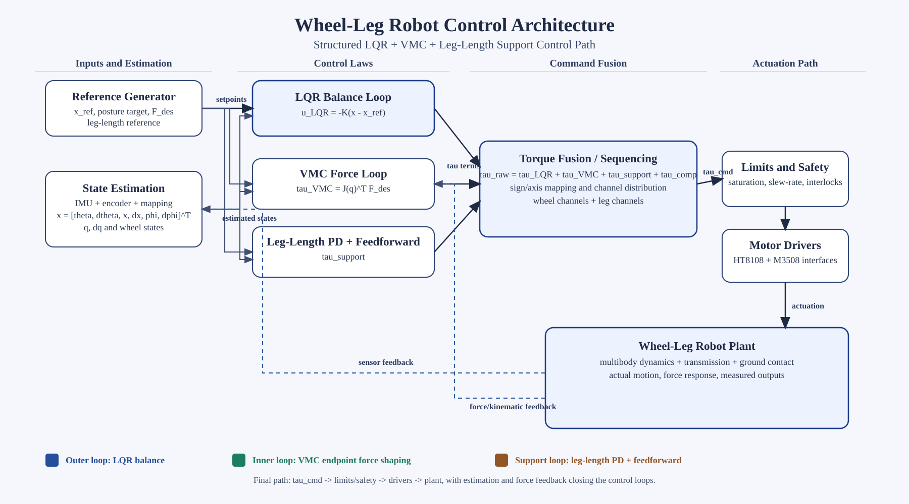
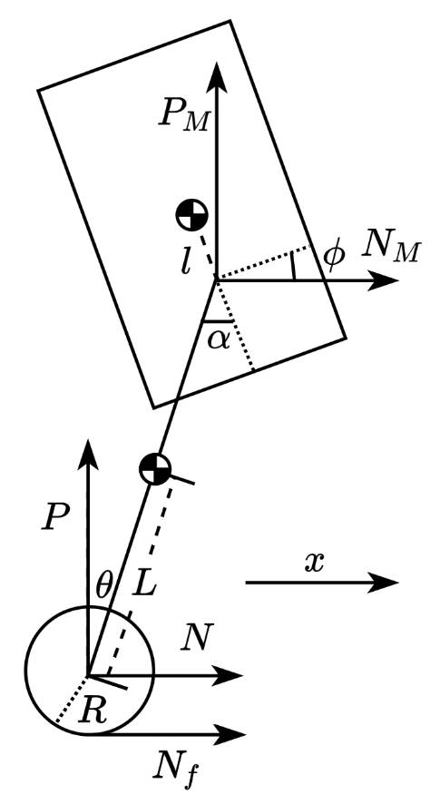
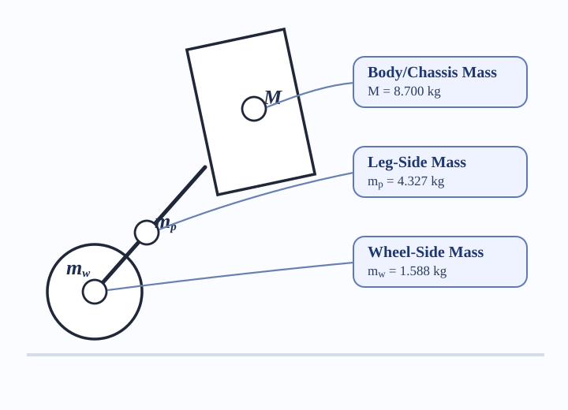
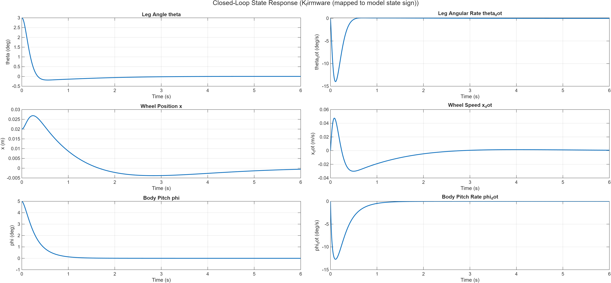

LQR is selected instead of a standalone PID approach because the wheel-leg balancing problem is strongly coupled across multiple states (\(\theta,\dot{\theta},x,\dot{x},\phi,\dot{\phi}\)) and multiple torque channels. A PID design can regulate individual loops, but it generally requires heavy manual decoupling and retuning when operating conditions change. In contrast, LQR provides a single full-state feedback gain \( \mathbf{u}=-K\mathbf{x}_{err} \) that simultaneously shapes stability, response speed, and control effort through \(Q\) and \(R\), giving a more systematic and repeatable tuning workflow for this project (Anderson & Moore, 2007; Lewis et al., 2012).

Figure 6.1. Integrated nested control-loop architecture for LQR balance, VMC force control, leg-length PD support, and torque output sequencing.
6.1.1 LQR Model

6.1.2 Reduced-Order Model and State Definition
The balancing dynamics are modeled using a reduced-order inverted-pendulum formulation around the upright operating point. The linearized model is \( \dot{\mathbf{x}} = A\mathbf{x} + B\mathbf{u} \), with \( \mathbf{x} = [\theta,\dot{\theta},x,\dot{x},\phi,\dot{\phi}]^T \) and \( \mathbf{u} = [T,\;T_p]^T \).
The six state terms are:
The two control inputs are:
This representation captures the dominant coupling between wheel translation and body pitch while remaining practical for real-time control synthesis.
6.1.3 LQR Objective and Control Law
The controller minimizes the quadratic performance index
\[ J = \int_0^\infty \left(\mathbf{x}^T Q \mathbf{x} + \mathbf{u}^T R \mathbf{u}\right)\,dt, \]and applies full-state feedback:
\[ \mathbf{u} = -K\mathbf{x}_{err}. \]Compared with tuning multiple independent loops, this gives one coordinated control action across all coupled states, consistent with standard LQR state-feedback design formulations (Anderson & Moore, 2007; Lewis et al., 2012).
6.1.4 Physical Meaning of \(A\), \(B\), \(Q\), and \(R\)
In this project, \(A\) and \(B\) come from model linearization, while \(Q\) and \(R\) are design selections used to trade off damping quality against control effort.
6.1.5 Firmware Sign Convention and Exported Gain
The model uses forward tilt as positive \(\phi\), while firmware uses the opposite pitch sign. So the exported gain applies \(K(:,5\!:\!6)=-K(:,5\!:\!6)\) so control direction stays consistent with sensor mapping and motor command polarity.
6.1.6 Integration in the Full Control Stack
LQR is implemented as one layer inside the full wheel-leg system rather than as a standalone block. During hardware testing, LQR output is combined with supporting subsystems:
6.1.7 Validation Scope and Current Status
Validation is performed in stages from simulation to bench testing, focusing on sign consistency, response direction, and closed-loop convergence trend. The LQR control path is functionally validated, while final high-performance balancing remains limited by the reused faulty motor condition.
The feedback gain matrix \(K\) is computed through the reduced-order workflow in build_reduced_model.m. The process is executed in the following sequence.
6.2.1 Step 1: Define physical parameters \(p\)
The model constants from build_reduced_model.m are:
Lumped masses are calculated directly from CAD mass aggregation:
\[ m_w = \frac{2\left(\sum m_{\mathrm{wheel\ assembly}}\right)}{1000} \] \[ \begin{aligned} m_w &= \frac{2\left(259.36 + 2(151.64) + 113.6 + 4(25.73) + 15\right)}{1000}\\ &= \frac{2(794.16)}{1000}\\ &= 1.58832\ \mathrm{kg} \end{aligned} \]Here, \(m_w\) represents the lumped wheel-side mass used in the reduced model. It groups the parts that move together with the wheel assembly and contribute to the wheel-side inertia and loading term.
\[ m_p = \frac{2\left(\sum m_{\mathrm{leg/pole\ assembly}}\right)}{1000} \] \[ \begin{aligned} m_p &= \frac{2\left(471.98 + 70.62 + 44.28 + 105.83 + 44.98 + 472.93 + 58.26 + 126.12\right)}{1000}\\ &\quad + \frac{2\left(146.57 + 22.03 + 33.58 + 336.4 + 12(15) + 50\right)}{1000}\\ &= \frac{2(2163.58)}{1000}\\ &= 4.32716\ \mathrm{kg} \end{aligned} \]Here, \(m_p\) represents the lumped leg-side mass used in the reduced model. It combines the structural members and mounted parts on the leg/body-side assembly that influence the pendulum-like dynamics.

Figure 6.3: Reduced-order balancing model with labeled lumped masses used in the LQR parameter definition.
In this reduced model, the detailed off-centre mass distribution of the leg is not modelled explicitly. Instead, it is absorbed into the equivalent parameters \(m_p\), \(L\), and \(I_p\). This is done because the reduced LQR model is intended to capture the dominant sagittal-plane balancing behaviour around the upright operating point, not the full distributed multibody geometry.
So the leg COM is not ignored completely. Rather, its detailed offset is replaced by one equivalent lumped mass location and one equivalent inertia term. This keeps the model compact enough for linearization and controller design while still preserving the main gravitational and inertial effects needed for the balancing dynamics.
These parameters define the reduced balancing model used for linearization.
6.2.2 Step 2: Build nonlinear reduced dynamics
Symbolic dynamics are written as \[ \dot{\mathbf{x}} = f(\mathbf{x},\mathbf{u},p), \] where \[ \mathbf{x} = [\theta,\dot{\theta},x,\dot{x},\phi,\dot{\phi}]^T,\quad \mathbf{u} = [T,\;T_p]^T. \] The symbolic source function used is reduced_dynamics_symbolic.m.
6.2.3 Step 3: Linearize at upright equilibrium
Jacobian linearization is performed at \(\mathbf{x}_0=\mathbf{0}\), \(\mathbf{u}_0=\mathbf{0}\): \[ A = \left.\frac{\partial f}{\partial \mathbf{x}}\right|_{(\mathbf{x}_0,\mathbf{u}_0)}, \qquad B = \left.\frac{\partial f}{\partial \mathbf{u}}\right|_{(\mathbf{x}_0,\mathbf{u}_0)}, \qquad \dot{\mathbf{x}} = A\mathbf{x}+B\mathbf{u}. \] Matrix dimensions are \[ A\in\mathbb{R}^{6\times6},\qquad B\in\mathbb{R}^{6\times2}. \] Expanded structure: \[ A= \begin{bmatrix} a_{11}&a_{12}&a_{13}&a_{14}&a_{15}&a_{16}\\ a_{21}&a_{22}&a_{23}&a_{24}&a_{25}&a_{26}\\ a_{31}&a_{32}&a_{33}&a_{34}&a_{35}&a_{36}\\ a_{41}&a_{42}&a_{43}&a_{44}&a_{45}&a_{46}\\ a_{51}&a_{52}&a_{53}&a_{54}&a_{55}&a_{56}\\ a_{61}&a_{62}&a_{63}&a_{64}&a_{65}&a_{66} \end{bmatrix},\quad B= \begin{bmatrix} b_{11}&b_{12}\\ b_{21}&b_{22}\\ b_{31}&b_{32}\\ b_{41}&b_{42}\\ b_{51}&b_{52}\\ b_{61}&b_{62} \end{bmatrix}. \]
The matrices \(A\) and \(B\) are obtained by differentiating the nonlinear reduced model around the upright condition. The calculation is based on the state vector \[ \mathbf{x}=[\theta,\dot{\theta},x,\dot{x},\phi,\dot{\phi}]^T, \qquad \mathbf{u}=[T,\;T_p]^T. \]
Step 1. Define the simplified COM positions
The leg COM and body COM positions are first written using the simplified inverted-pendulum geometry: \[ \mathbf{r}_{leg} = \begin{bmatrix} x+L\sin\theta\\ -L\cos\theta \end{bmatrix}, \qquad \mathbf{r}_{body} = \begin{bmatrix} x+(L+L_M)\sin\theta+l\sin\phi\\ -(L+L_M)\cos\theta+l\cos\phi \end{bmatrix}. \] These two position vectors are used to calculate the leg and body velocities, then the kinetic energy and potential energy of the reduced system.
Step 2. Write the acceleration model
The nonlinear dynamics are first arranged in the form \[ \mathbf{M}(\mathbf{q})\ddot{\mathbf{q}}+\mathbf{h}(\mathbf{q},\dot{\mathbf{q}})=\mathbf{Q}, \qquad \mathbf{q}=[x,\theta,\phi]^T. \] Therefore, \[ \ddot{\mathbf{q}} = \mathbf{M}(\mathbf{q})^{-1} \left(\mathbf{Q}-\mathbf{h}(\mathbf{q},\dot{\mathbf{q}})\right). \] This is the source of the acceleration terms: \[ \ddot{x}, \qquad \ddot{\theta}, \qquad \ddot{\phi}. \]
Step 3. Substitute the upright operating point
At the upright point, \(\theta=0\), \(\phi=0\), and all velocities are zero. The mass matrix becomes \[ \mathbf{M}_0 = \begin{bmatrix} 15.1968 & 2.6266 & 0.4065\\ 2.6266 & 0.6114 & 0.0992\\ 0.4065 & 0.0992 & 0.1532 \end{bmatrix}. \] The two main gravity-gradient terms at this point are \[ k_\theta=g\left(m_pL+M(L+L_M)\right)=25.7671, \qquad k_\phi=Mgl=3.9874. \]
Step 4. Separate state effect and input effect
Near upright, the acceleration part can be written approximately as \[ \ddot{\mathbf{q}} = \mathbf{M}_0^{-1} \left( \begin{bmatrix} T/R\\-T_p\\T_p \end{bmatrix} - \begin{bmatrix} 0\\k_\theta\theta\\-k_\phi\phi \end{bmatrix} \right). \] This equation shows the split clearly. The \(\theta\) and \(\phi\) terms contribute to \(A\), while \(T\) and \(T_p\) contribute to \(B\).
Step 5. Use the Jacobian linearization command
In the symbolic calculation, the following operations are applied: \[ A=\left.\frac{\partial f}{\partial\mathbf{x}}\right|_{\mathbf{x}=0,\mathbf{u}=0}, \qquad B=\left.\frac{\partial f}{\partial\mathbf{u}}\right|_{\mathbf{x}=0,\mathbf{u}=0}. \] This is equivalent to checking how each state and input changes \[ f(\mathbf{x},\mathbf{u}) = [\dot{\theta},\ddot{\theta},\dot{x},\ddot{x},\dot{\phi},\ddot{\phi}]^T \] at the upright point.
Step 6. Final matrices used for LQR
With the current model parameters, the resulting linearized matrices are \[ A= \begin{bmatrix} 0 & 1 & 0 & 0 & 0 & 0\\ -170.052 & 0 & 0 & 0 & -5.351 & 0\\ 0 & 0 & 0 & 1 & 0 & 0\\ 28.467 & 0 & 0 & 0 & 0.146 & 0\\ 0 & 0 & 0 & 0 & 0 & 1\\ 34.578 & 0 & 0 & 0 & 29.104 & 0 \end{bmatrix}, \] \[ B= \begin{bmatrix} 0 & 0\\ -6.655 & -7.942\\ 0 & 0\\ 1.541 & 1.141\\ 0 & 0\\ 0.221 & 8.641 \end{bmatrix}. \]
The \(A\) matrix represents how the robot moves naturally near upright, especially how \(\theta\) and \(\phi\) create acceleration. The \(B\) matrix represents how the two control inputs \(T\) and \(T_p\) affect the same acceleration states. These two matrices are then used directly for the LQR gain calculation.
6.2.4 Step 4: Choose weighting matrices \(Q,R\)
In the script, the selected LQR weights are: \[ Q = \mathrm{diag}(100,\;10,\;5,\;5,\;300,\;20) = \begin{bmatrix} 100&0&0&0&0&0\\ 0&10&0&0&0&0\\ 0&0&5&0&0&0\\ 0&0&0&5&0&0\\ 0&0&0&0&300&0\\ 0&0&0&0&0&20 \end{bmatrix}, \] \[ R = \mathrm{diag}(1,\;1) = \begin{bmatrix} 1&0\\ 0&1 \end{bmatrix}. \]
Higher \(Q\) entries increase state-regulation priority; higher \(R\) entries reduce control aggressiveness.
6.2.5 Step 5: Compute \(K\) from LQR
The \(K\)-matrix computation is implemented in build_reduced_model.m, where the gain is solved from the linearized model and selected \(Q,R\) weights.
The gain is computed via \[ K_{\mathrm{model}}=\mathrm{lqr}(A,B,Q,R). \] Its expanded form is \[ K_{\mathrm{model}}= \begin{bmatrix} k_{11}&k_{12}&k_{13}&k_{14}&k_{15}&k_{16}\\ k_{21}&k_{22}&k_{23}&k_{24}&k_{25}&k_{26} \end{bmatrix} \in\mathbb{R}^{2\times6}. \] The implemented law is \[ \mathbf{u}=-K\mathbf{x}_{err}. \]
Numerically, this corresponds to solving the continuous-time algebraic Riccati equation and then recovering the optimal feedback gain, as implemented by standard Schur-based methods in control software (Laub, 1979; MathWorks, n.d.-a).
Substituting the model identified in the script gives: \[ K_{\mathrm{model}}= \begin{bmatrix} -4.0359 & -2.2919 & 2.0117 & 3.9655 & -7.1648 & -1.6510\\ -7.6219 & -0.6497 & 0.9763 & 1.9702 & 21.2174 & 4.9853 \end{bmatrix}. \]
6.2.6 Step 6: Apply firmware sign convention
To match firmware pitch sign convention, columns corresponding to \(\phi\) and \(\dot{\phi}\) are negated: \[ K_{\mathrm{firmware}}(:,5:6) = -K_{\mathrm{model}}(:,5:6). \] So: \[ K_{\mathrm{firmware}}= \begin{bmatrix} -4.0359 & -2.2919 & 2.0117 & 3.9655 & 7.1648 & 1.6510\\ -7.6219 & -0.6497 & 0.9763 & 1.9702 & -21.2174 & -4.9853 \end{bmatrix}. \] This is the firmware-ready \(K\) used in control.
6.2.7 Step 7: Validate closed-loop response and export
Closed-loop check is performed in
test_lqr_linear.m
using \(A_{cl}=A-BK\), then the matrices are exported through
save('reduced_model_ABK.mat', 'A', 'B', 'K', 'K_model', 'p', 'ff'),
where \(K\) corresponds to the firmware-ready gain and \(K_{\mathrm{model}}\) preserves the original model sign convention.

Figure 6.2: Disturbance validation response of all six states under closed-loop \(A_{cl}=A-BK\).
Video 6.1: Normalized closed-loop response using the implemented \(K\)-matrix.
This animation shows the time evolution of all six reduced states \((\theta,\dot{\theta},x,\dot{x},\phi,\dot{\phi})\) under the same closed-loop simulation, where each trace is normalized by its own peak magnitude for visual comparison. The target result is that all states return toward zero with decaying oscillation, showing that the selected \(K\) stabilizes the linearized model. The animation and exported response media are generated from plot_kmatrix_response.m.
In project terms, this step is a check point before firmware hardware testing: it verifies sign-convention handling (\(K_{\mathrm{model}}\) vs. \(K_{\mathrm{firmware}}\)), confirms response directionality after disturbance injection, and provides a clear reference for tuning balance between correction aggressiveness and damping quality.
6.3.1 Why VMC is Used
6.3.2 Core Mapping Equations
For joint angles \(q=[\phi_1,\phi_2]^T\) and endpoint position \(\mathbf{G}(q)=[x(q),y(q)]^T\):
\[ \dot{\mathbf{G}} = J(q)\dot{q},\qquad J(q)= \begin{bmatrix} \frac{\partial x}{\partial \phi_1} & \frac{\partial x}{\partial \phi_2}\\ \frac{\partial y}{\partial \phi_1} & \frac{\partial y}{\partial \phi_2} \end{bmatrix}. \]The desired endpoint force is converted to joint torque by:
\[ \tau = J^T \mathbf{F}_{des},\qquad \mathbf{F}_{des}=[F_x,F_y]^T,\qquad \tau=[\tau_1,\tau_2]^T. \]The transpose mapping in this form follows the virtual-work and operational-space force interpretation widely used in robotics (Khatib, 1987).
If \(J\) is in \(\mathrm{mm/rad}\), torque is first in \(\mathrm{N\cdot mm}\), then converted to \(\mathrm{N\cdot m}\): \( \tau_{\mathrm{N\cdot m}} = \tau_{\mathrm{N\cdot mm}}/1000 \).
6.3.3 MATLAB Implementation
The implementation is documented in VMC_WN_Jacobian_Transformation.m and VMC_WN_Jacobian_Transformation_Animation.m. In these scripts, the Jacobian is computed numerically (central difference in degrees), then converted to \(\mathrm{mm/rad}\):
\[ \frac{\partial \mathbf{G}}{\partial \phi_i}\bigg|_{\deg} \approx \frac{\mathbf{G}(\phi_i+h)-\mathbf{G}(\phi_i-h)}{2h}, \qquad J_{\mathrm{rad}} = J_{\mathrm{deg}}\frac{180}{\pi}. \]6.3.4 Role in the Full Control Loop
6.3.5 Quality Metrics and Limitations
This subsection explains exactly which torque elements are combined before the final motor command is sent.
6.4.1 Balance Torque from LQR
Using the reduced-order model, the balance channel is \[ \mathbf{u}= \begin{bmatrix} T\\T_p \end{bmatrix} = -K\mathbf{x}_{err}, \] where \(T\) is the wheel-torque channel and \(T_p\) is the body/leg torque channel (see test_lqr_linear.m).
6.4.2 Additional Torque Elements
6.4.3 Gain-Scheduled LQR for Different Leg Lengths
A practical way to combine leg-length control and LQR balancing is to use different LQR gains for different nominal leg lengths. This is useful because the robot dynamics change when the wheel centre moves up or down. A longer or shorter leg changes the effective pendulum length, centre of mass location, inertia distribution, and actuator leverage. Therefore, one fixed \(K\)-matrix is only most accurate near the leg length where that \(K\) was designed.
The idea is to treat each leg length as a different operating point. For selected leg lengths \[ l_1,\;l_2,\;\ldots,\;l_n, \] the model is linearized again: \[ A_i=A(l_i),\qquad B_i=B(l_i). \] A corresponding LQR gain is then calculated for each operating point: \[ K_i=\mathrm{lqr}(A_i,B_i,Q_i,R_i). \]
During runtime, the current leg-length command or measured wheel-centre height is used to select the nearest gain, or interpolate between two neighbouring gains: \[ K(l)\approx (1-\alpha)K_i+\alpha K_{i+1}. \] The balance command is then calculated using the gain that matches the current leg configuration: \[ \mathbf{u}_{\mathrm{LQR}}=-K(l)\mathbf{x}. \]
This explains why leg-length PD and LQR do not have to fight each other. The leg-length PD loop mainly controls the desired wheel-centre height or support extension, while the LQR loop balances the body around that current height. In other words, the leg-length controller changes the operating point, and the scheduled LQR gain controls balance at that operating point.
The command flow can be summarized as \[ l_{\mathrm{des}} \rightarrow \tau_{\mathrm{support}}, \qquad l_{\mathrm{des}}\ \text{or}\ l_{\mathrm{meas}} \rightarrow K(l) \rightarrow \tau_{\mathrm{LQR}}. \] The support command and balance command are then combined in torque sequencing. This keeps the two objectives separated: the PD loop handles leg length, while LQR uses a gain that is valid for that leg length.
6.4.4 Final Torque Composition (Before Motor Mapping)
In compact form, the generalized command is assembled as \[ \tau_{\mathrm{raw}} = \tau_{\mathrm{LQR}} + \tau_{\mathrm{VMC}} + \tau_{\mathrm{support}} + \tau_{\mathrm{comp}}, \] where \(\tau_{\mathrm{support}}\) is the leg-length support contribution and \(\tau_{\mathrm{comp}}\) represents optional correction terms.
6.4.5 Mapping to Motor Commands
6.4.6 Verification Reference
Verification scripts used in this torque-sequencing section are test_lqr_linear.m and plot_kmatrix_response.m. Detailed disturbance-recovery results are presented in K-matrix Step 7 to avoid duplication across sections.
Loading...